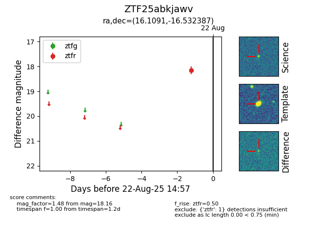

Target ZTF25abkjawv at 2025-08-22 15:41, see:
FINK: fink-portal.org/ZTF25abkjawv
Lasair: lasair-ztf.lsst.ac.uk/objects/ZTF25abkjawv
ALeRCE: alerce.online/object/ZTF25abkjawv
alt names
ZTF25abkjawv (ztf,alerce)
coordinates:
equatorial (ra, dec) = (16.1091,-16.53239)
galactic (l, b) = (139.4560,-78.98485)
photometry
last ztfr=18.16
1 ztfr detections
